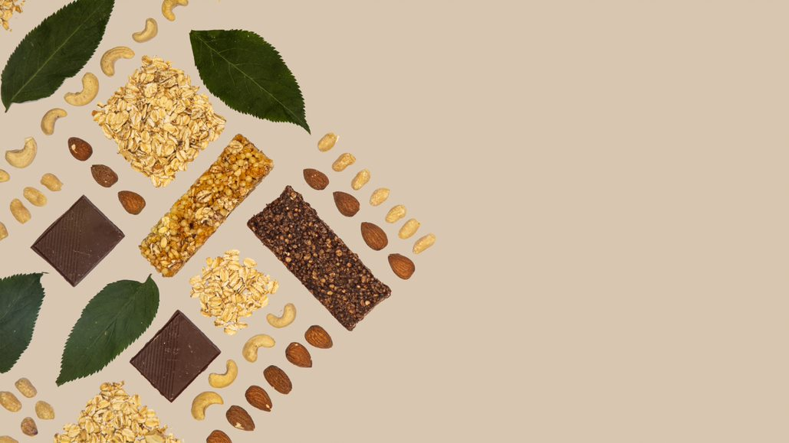

1 / 3
2 / 3

Caption Two
3 / 3

Caption Three
Mehere Studien beweisen, dass vegane Ernährung mehr Antioxidantien, Potassium, Magnesium, Folsäure und andere essentielle Vitamine und Mineralien enthält.
Deshalb ist das NATURSTÜCK eine perfekte Ergänzung zu deinen täglichen Nährstoffen.
Bei der Herstellung des NATURSTÜCKs werden Produkte aus ökologisch-kontrolliertem Anbau verwendet.
Verpackt wird der Riegel in umweltfreundliches, plastikfreies und kompostierbares Haushaltspapier.

NATURSTÜCK bietet eine Möglichkeit, die Ernährung abwechslungsreicher zu gestalten und zu verfeiernern.
Um die Vermischung mit anderen Getreidearten zu vermeiden, gehen wir mit besonderer Sorgfalt vor – vom Saatgut bis zur Verpackung.
Bei der Auswahl der Zutaten für das NATURSTÜCK wird besonders darauf geachtet, dass beim Anbau weder Pestizide, noch Kunstdünger eingesetzt wird.
”Ob du es glaubst oder nicht, ich war ein Junk-Food-Junkie, bis ich entdeckte, wie natürliche Lebensmittel meinen Geist, Körper und Geist belebten. Und sich gut zu fühlen, das ist alles was wirklich zählt.”
“Rückblickend ist die beste Lektion, immer auf die Intuition zu hören und der Leidenschaften im Leben zu folgen. Man muss keine Angst haben, anders und innovativ zu sein. Probiere etwas Neues aus, auch wenn du nicht weißt, was du tust! Sei dir sicher, Spaß zu haben und umgebe dich mit Menschen, die deine Träume unterstützen.”
“Nachdem ich die Gänge von Lebensmittelgeschäften durchforstet habe, vertiefte ich mich in meine eigene Produktentwicklung. Natürliche Lebensmittel sollten, meiner Meinung nach, Spaß machen, genussreich und auch gut für dich sein.”